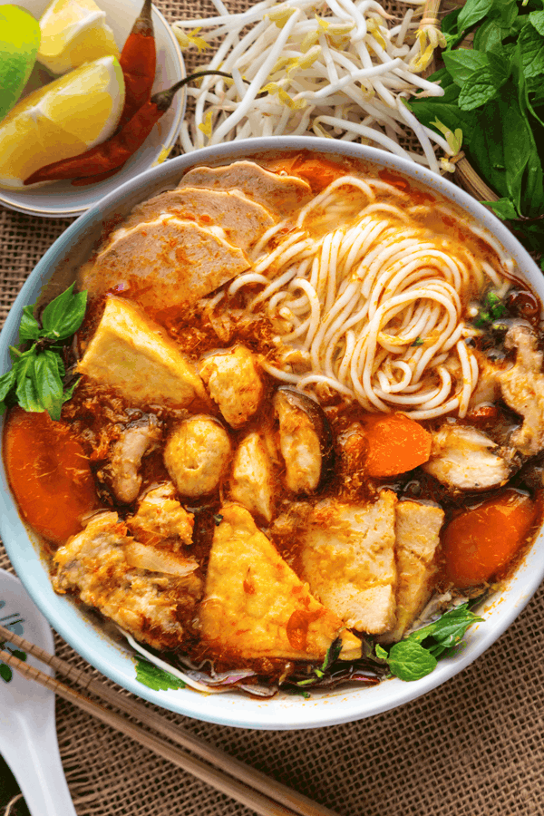

Bun Bo Hue

Description
Bun Bo Hue is a popular Vietnamese rice noodle dish. It consists of sliced beef, pork knuckles, spicies and herbs
Bun Bo Hue originated from the central region of Hue. It's popularity has spread throughout all parts of Vietnam and the world.
Ingredients
- Rice vermicelli
- Beef brisket
- Pork leg
- Pig blood curd
- Green onion
- Spicy chili oil
- Fermented shrimp paste
- Oxtail
Steps
- Clean the meat: Add all meat to a stock pot and enough water to submerge it, bring to a boil
- Drain and rinse thoroughly under running water.
- Add the meat, broth, lemongrass and onions to the pot and fill with water almost to the brim
- Let it simmer and periodically check the meats for doneness and remove them as they finish cooking.
- After all the meat has removed, let it cool, then slice it.
- Adjust seasoning and add water to the broth pot if necessary.